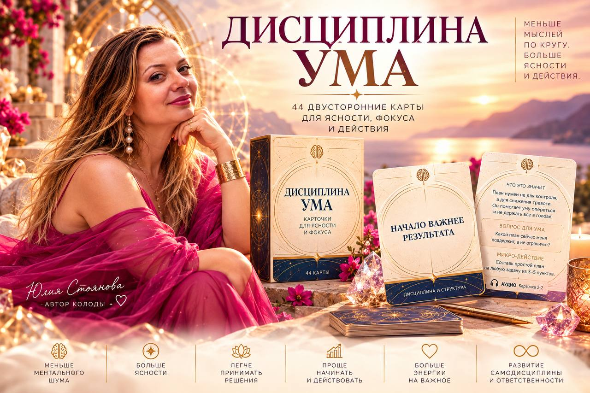
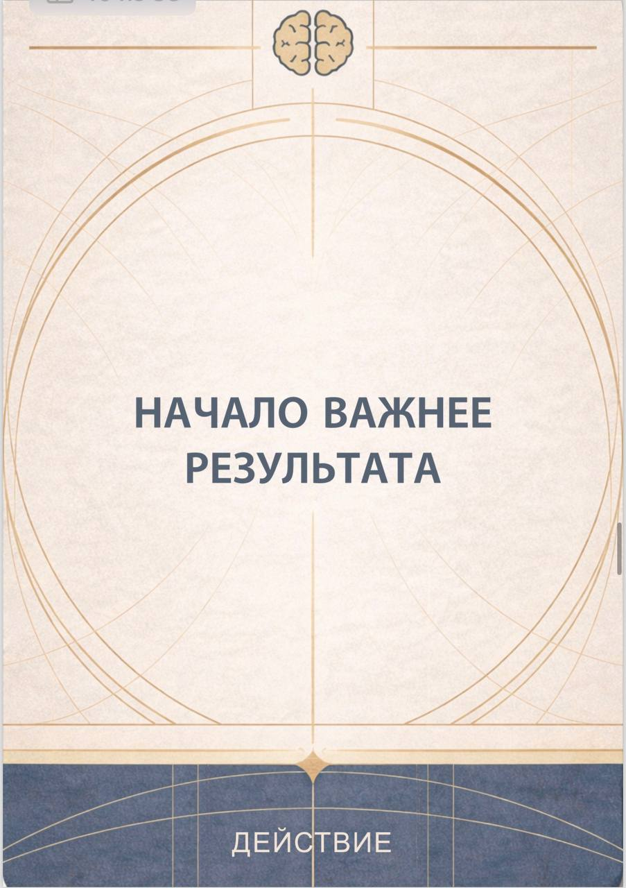
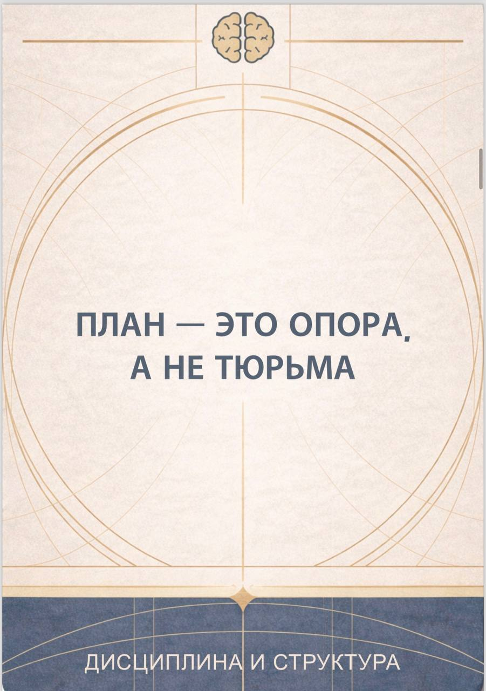
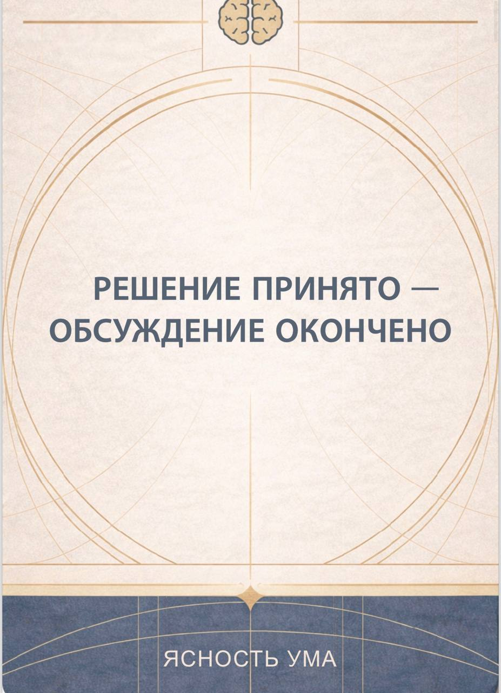
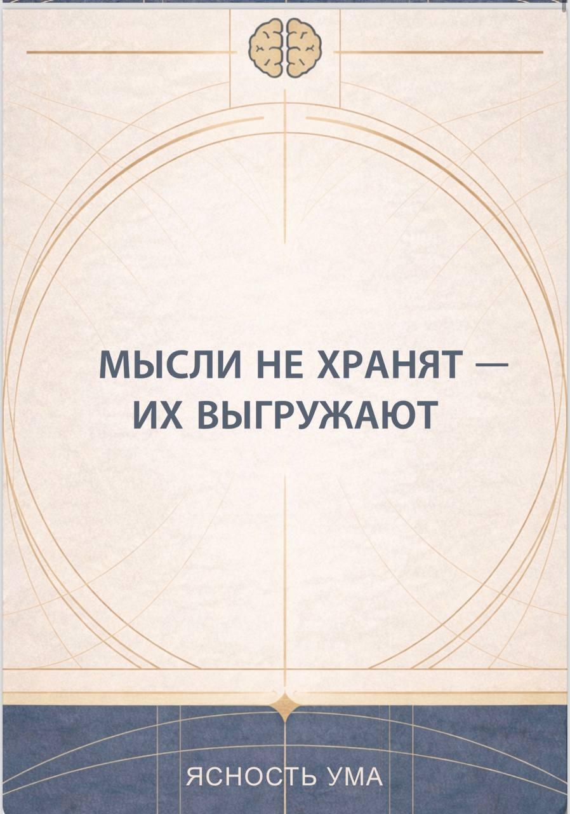
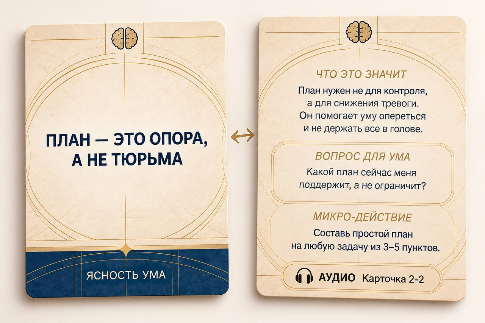

01
Карта дня
Утром вытяни одну карту и наблюдай в течение дня, где проявляется этот принцип.
44 двусторонние карты для ясности, фокуса и действия
Когда мысли ходят по кругу, сложно услышать себя, принять решение и начать действовать.
Эти карты помогают остановить внутренний шум, увидеть, что происходит в уме прямо сейчас, и сделать следующий шаг.
Меньше мыслей по кругу. Больше ясности и действия.

Ты уже принял решение, но продолжаешь его обдумывать.
Знаешь, что нужно сделать, но откладываешь начало.
Пытаешься удержать в голове десятки задач одновременно.
Составляешь планы, но вместо опоры они превращаются в давление.
Слишком долго анализируешь и теряешь энергию ещё до первого действия.
Иногда проблема не в отсутствии ответа. Ответ уже есть. Но ум продолжает создавать вокруг него шум.
Это 44 двусторонние карты, созданные для работы с мышлением в обычной жизни.
Не длинная теория. Не очередной список правил, которым нужно следовать.
А короткие и точные ментальные опоры, которые помогают заметить привычный сценарий мышления и переключиться на более конструктивное действие.




Нажми на карту
Короткая формула помогает остановиться и увидеть принцип работы ума.
Короткое объяснение без перегруженной теории.
Помогает применить карту именно к своей ситуации.
Небольшой конкретный шаг переводит осознание в действие.
Помогает глубже поработать с темой.
Нажми ещё раз, чтобы перевернуть карту обратно.
Мы часто уже знаем, что нам нужно делать. Но продолжаем думать. А потом ещё немного думать. И ещё раз обсуждать с собой уже принятое решение.
Поэтому в каждой карте есть микро-действие. Не огромная задача. Не обещание «с понедельника изменить жизнь». А один выполнимый шаг.
Сделай первый шаг, не думая о финале.
Останавливать бесконечное прокручивание мыслей.
Быстрее переходить от решения к действию.
Выгружать задачи из головы.
Структурировать то, что кажется хаосом.
Использовать план как поддержку, а не давление.
Замечать, куда уходит ментальная энергия.
Возвращать внимание к тому, что действительно важно.
Делать первый шаг без необходимости заранее видеть весь путь.
Умом не обязательно бороться.
Им можно научиться управлять.
Утром вытяни одну карту и наблюдай в течение дня, где проявляется этот принцип.
Если долго думаешь, откладываешь или не можешь принять решение, сформулируй вопрос и вытяни карту.
Используй карту, чтобы отделить реальные действия от тревоги, предположений и бесконечного анализа.
Проходи карты последовательно и выполняй микро-действия.
Колода не требует специальной подготовки.
Открываешь. Читаешь. Наблюдаешь за собой. Делаешь.

Каждая карта — маленький инструмент для работы с конкретным ментальным процессом.
Это не колода, которую обязательно проходить один раз от первой карты до последней. К ней можно возвращаться снова — потому что одна и та же карта в разных жизненных ситуациях может открыть совершенно разное.
Карты созданы так, чтобы между пониманием и применением было как можно меньше расстояния.
Не просто: «Я понял».
А: «Я понял, что происходит со мной, и знаю, что сделать сейчас».
Здесь будет реальный отзыв
Здесь будет реальный отзыв
Здесь будет реальный отзыв
«Я всё понимаю.
Но почему я всё ещё ничего не делаю?»
В колоде «Дисциплина ума» 44 двусторонние карты. На каждой — одна точная идея, которая помогает увидеть работу собственного ума. А затем вопрос и микро-действие, которые возвращают тебя из размышлений в реальность.
Дисциплина ума
Меньше внутреннего шума. Больше ясности. Больше действия.
Получить колоду →